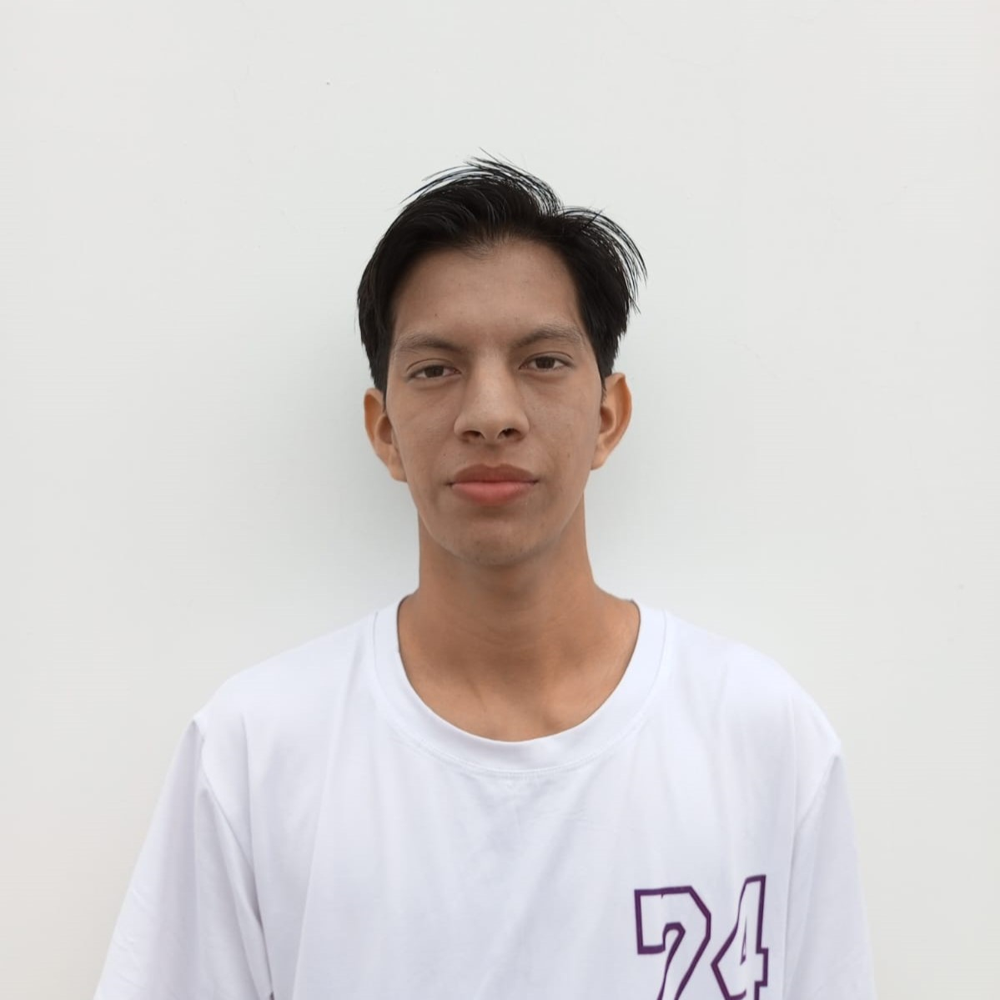
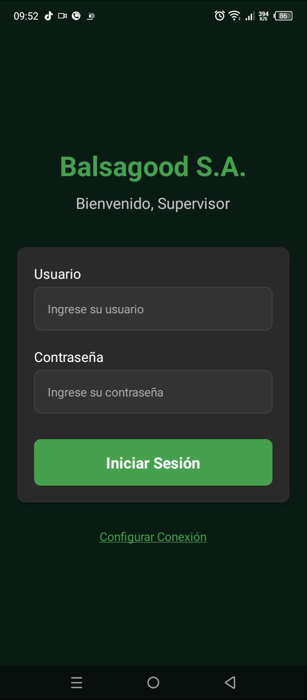

Sobre mí

Soy estudiante de Ingeniería en Software en la Universidad Estatal Península de Santa Elena. En este viaje,
estoy descubriendo nuevas habilidades y personas que alimentan mis gustos por el desarrollo, el trabajo en equipo, la gestión de proyectos y la tecnología en general.
Actualmente estoy considerando aprender el funcionamiento de la IA para crear agentes racionales, y de esta manera levantar proyectos frutíferos en mi camino estudiantil.
En el transcurso de mi carrera, me he dado cuenta que ser objetivo no siempre define ser específico al expresar algo, sino que podemos ahondar un tema con diferentes enfoques;
esto va tanto para cosas triviales como para conceptos difíciles.
Nuestra capacidad de abstracción permite conectar con las necesidades subjetivas, ortodoxas, las que están al margen de la explicación del usuario.
Stack Tecnológico
- Backend: Creación de APIs REST con Java y SpringBoot.
-
Frontend:
- HTML vanilla, JS y CSS vanilla
- Frameworks: React y Angular (Aprendiendo actualmente)
-
Entornos de Desarrollo:
- Control de versiones con Git y GitHub.
- Bash
-
Bases de datos:
- PostgreSQL
- SQLServer
Conoce mis proyectos
-
Control de logística de una fábrica de madera: Sistema CRUD enfocado el registro en tiempo real de datos sobre la madera (medidas, pesos, volúmenes, cualidades, etc) como proyecto de prácticas pre-profesionales en una empresa de balsa. Conformado por un dashboard, tablas, y formularios de registro tanto en web como en móvil.
Es un sistema que tiene backend, frontend web y frontend móvil por separado. - Backend: Java y SpringBoot
- Frontend: React y React Native
- Base de datos: PostgreSQL

Hobbies
Básquetbol 🏀
- A parte de jugarlo por salud o diversión, también me ha permitido conocer grandes personas.
- Aprendí lo que es la disciplina, y cómo aplicarla en diferentes ámbitos.
Videojuegos 🎮
- Desde niño hasta la actualidad, los videojuegos han evolucionado la forma en que pueden cambiarnos la vida 🎮.
- Me gusta la capacidad que tienen de hacer ver la vida de formas distintas y cómo podemos conectar con personas de otros lugares.